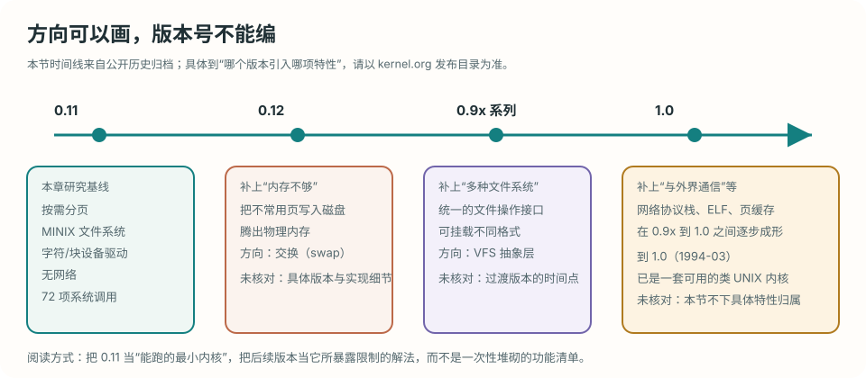
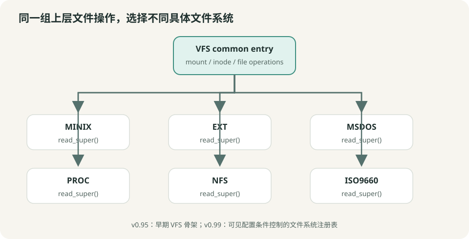
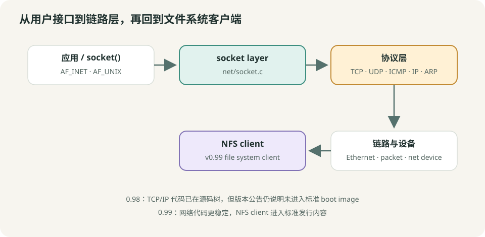

从 Linux 0.11 到 1.0：虚拟内存、VFS 与网络栈如何长成
用 Linux 0.11、0.12、0.95、0.98、0.99 与 1.0 的原始源码校准早期内核演进：区分需求调页与 swap、VFS 骨架与成熟注册表、TCP/IP 源码与默认启用，以及 4GiB 线性空间和 3GiB 用户地址边界。
源码版本考古 · 纠正 4GiB 误读先校准时间线：哪些变化真的发生在这些版本？
Linux 0.11 到 1.0 不是一条“每个版本新增一个现代子系统”的直线。源码里有三个经常被混为一谈的层次：CPU 已经提供的能力、某个版本真正实现的内核机制，以及某项代码是否进入默认启动镜像或标准发行配置。只有把这三者分开，才能准确理解早期 Linux 的演进。
本章用原始 tag 源码和版本公告交叉验证。结论先说在前面：0.11 已有可执行文件按需调页；0.12 才把换出/换入到磁盘的 swap 路径做进来；0.95 的 VFS 仍是早期骨架；0.98 的 TCP/IP 已进入源码树但当时并非默认启动镜像的一部分；0.99 已经把用户空间上限写成 3GiB，而不是每个进程独占 4GiB。

0.11 并非“没有虚拟内存”：需求调页早已存在
理解 0.12 的 swap，必须先纠正一个常见误读：Linux 0.11 并不是把每个进程的所有代码和数据一次性完整读入 RAM。v0.11 的 mm/memory.c 已实现 executable demand loading：页故障发生时，内核可以从可执行文件对应区域把页面装入；源码注释还记录了 1991 年 12 月初需求装入和共享页的开发过程。它已经有分页、页故障、共享页和写时复制相关路径。
真正的差别是：0.11 的内存回收没有 0.12 那套可配置交换设备和 swap bitmap 管理的磁盘换出机制。需求调页回答“尚未驻留的文件页何时装入”；swap 回答“匿名/脏页面在内存紧张时如何暂存到交换设备，并在之后恢复”。两者都是虚拟内存系统的一部分，但不是同一功能。
可直接阅读 v0.11/mm/memory.c 的页故障路径，再与 v0.12/mm/memory.c 文件头的开发记录对照。不要用现代术语“完整的 VM 子系统”去抹平 0.11 的功能边界。

0.12：swap_out 是分配失败时触发的回收路径，不是 swapd 守护进程
v0.12 的 mm/swap.c 是最可靠的证据。get_free_page() 先扫描 mem_map 寻找空闲页；当扫描失败时，它直接调用 swap_out()，成功释放一页后再重试分配。这个调用关系说明：这里的换出是分配路径内同步触发的回收逻辑，不能把它写成现代意义上的独立 kswapd 守护线程。
if (!__res && swap_out())
goto repeat;
return __res;swap_out() 使用静态游标沿页目录和页表扫描；try_to_swap_out() 检查 PTE 是否 present、页面是否属于可管理的物理内存，以及 mem_map 引用计数是否为 1。若 PTE dirty，分配一个 swap slot，把页表项替换为 swap 编号并写出页面；若页面 clean，则清除 PTE、刷新 TLB 并释放物理页，不必写入交换设备。之后缺页路径根据非 present PTE 中保存的 swap 编号调用 swap_in() 读回页面。
if (PAGE_DIRTY & page) {
swap_nr = get_swap_page();
*table_ptr = swap_nr << 1;
invalidate();
write_swap_page(swap_nr, (char *)page);
free_page(page);
return 1;
}
*table_ptr = 0;
invalidate();
free_page(page);
return 1;这不是教科书里常见的“第二次机会算法”实现：代码没有先清访问位再给页面第二次机会的循环；它主要依赖 dirty 位、页引用计数和扫描游标。也不应称它为 LRU：没有维护一个完整的最近使用顺序链表。准确说法是早期、成本很低的页表扫描换出策略。
v0.12 的 include/linux/sched.h 同时定义了 SWAP_DEV 相关配置与每任务地址范围；版本公告也记录了 mkswap 与 swap 使用说明。源码入口：mm/swap.c、mm/memory.c、sched.h。
0.12 的 swap_out 是否由一个常驻 swapd 线程定期执行？（展开核对）
不是。这里可直接看到 get_free_page() 在分配失败时调用 swap_out()，然后重试。不要把后来的 kswapd 机制倒灌到 0.12。
0.95 的 VFS 是早期抽象层，不是今天的完整 VFS
0.95 版本公告把 VFS patch 纳入版本，但同时明确提醒：相关例程尚未具备全部功能，更多工作会在下一版继续。这个限定非常重要。它说明 VFS 作为“让上层文件操作不必直接知道具体磁盘格式”的方向已经出现，但不能据此声称 0.95 已拥有今天的完整文件系统注册、挂载、dentry 缓存和多文件系统生态。
更清晰的证据出现在 v0.99 的 fs/filesystems.c：file_systems[] 注册表根据配置列出 MINIX、EXT、MSDOS、PROC、NFS 和 ISO9660，每项关联对应的 read_super 函数和文件系统名字。此时“同一套 VFS 接口承接多种具体文件系统”已经能从代码中直接看见。注意该数组由编译配置条件控制；出现在源文件里不等于每种文件系统都在某个发行镜像中启用。

进一步阅读 v0.95/include/linux/fs.h、v0.95/fs/super.c，再对照 v0.99/fs/filesystems.c。你会发现“VFS”不是某个单独的 struct 名称，而是一组跨具体文件系统的对象和调用约定；它在多个版本中逐步变得可用。
0.98 TCP/IP：进入源码树，不等于默认可启动的网络系统
v0.98 的源码树已经有 net/socket.c、net/unix.c，以及 net/tcp/ 下的 ARP、IP、ICMP、TCP、UDP、Ethernet 和 packet 处理代码。这足以证明网络栈实现已进入内核源码。但 v0.98 版本公告对 TCP/IP 0.8.1 的状态非常谨慎：当时它还没有编进标准 boot image，维护者也明确说自己只观察到它能够编译，尚未完成更深入测试。
所以不能把“0.98 有 TCP/IP 代码”改写成“0.98 默认开机就有稳定网络服务”。到 0.99 的公告，TCP/IP 被描述为更稳定，NFS client 也进入标准发行内容。这个变化可以从代码树与版本公告共同确认，而不是只看目录里是否存在 tcp.c。

源码入口：net/socket.c、net/tcp/tcp.c、net/tcp/ip.c、net/tcp/udp.c；NFS 与多文件系统表见 v0.99/fs/nfs/ 和 fs/filesystems.c。
4GiB 这个数字：先分清 CPU 线性地址范围与每进程用户空间
原有章节把“0.99 4GB 线性空间”写成了每个进程拥有 4GiB 独立空间，这是错误的。最直接的反证就在两个版本的 include/linux/sched.h：
- v0.12：
TASK_SIZE = 0x04000000，即 64MiB；NR_TASKS = 64，源码还用编译期检查确保TASK_SIZE × NR_TASKS = 4GB。这说的是 64 个任务地址槽位的总线性范围，不是一个任务有 4GiB。 - v0.99：注释明确写着“User space process size: 3GB”，并定义
TASK_SIZE = 0xc0000000。这说明用户态上限是 3GiB，32 位地址空间剩余的高 1GiB 留给内核映射。

这个区别还帮助理解物理内存：32 位 CPU 的线性地址宽度是 4GiB，不代表机器装了 4GiB RAM，也不代表用户进程能把全部 4GiB 当作用户地址。物理 RAM 大小、内核虚拟映射、用户进程地址上限和设备地址窗口是不同维度。
源码证据：v0.12/sched.h 中 64MiB/64 任务的宏和检查；v0.99/sched.h 中 3GiB 的 TASK_SIZE；v1.0/sched.h 保留相同的 3GiB 注释。
为什么 v0.12 源码里会出现 TASK_SIZE × NR_TASKS = 4GB？（展开核对）
它描述 64 个任务槽位合计覆盖的 32 位线性地址范围。TASK_SIZE 本身只有 64MiB；不能把总槽位范围误读成每个进程的地址空间。
到 1.0：VMA、vmalloc 与 3GiB 用户边界已经能在源码中定位
v1.0 的 include/linux/mm.h 定义 vm_area_struct，包含 vm_start、vm_end、页面保护、文件 inode、文件偏移和 vm_ops 等字段；注释把 VMA 描述为进程虚拟内存空间中具有特殊缺页处理规则的区域。相同文件还声明 do_mmap()、do_munmap()、remap_page_range() 等接口。
mm/vmalloc.c 则展示内核虚拟地址分配：先按页对齐，维护 vmlist，在 high_memory + VMALLOC_OFFSET 之后找空洞，再为虚拟区间建立映射；vfree() 会解除页面映射并释放描述对象。这已经不是 0.11 里“固定低端映射 + 任务段基址”的简单模型。
#define TASK_SIZE 0xc0000000
struct vm_area_struct {
struct task_struct *vm_task;
unsigned long vm_start, vm_end;
unsigned short vm_page_prot;
struct vm_area_struct *vm_next;
struct inode *vm_inode;
unsigned long vm_offset;
struct vm_operations_struct *vm_ops;
};
extern int do_mmap(...);
extern int do_munmap(...);
extern void *vmalloc(unsigned long size);注意：这些是 v1.0 的历史接口，不应直接复制到现代内核模块。它们的价值在于显示虚拟内存管理已从早期的页表/段管理逐步发展为显式区域对象与映射操作。
把版本号变成可验证的因果链
| 版本 | 可以确认的变化 | 不要误写成 |
|---|---|---|
| 0.11 | 文件后备需求调页、共享页、分页机制 | 完全没有虚拟内存；所有页面都预先读入 |
| 0.12 | 可配置 swap 设备、swap bitmap、swap_out/swap_in | kswapd + 第二次机会 LRU |
| 0.95 | 早期 VFS 抽象进入演进过程 | 现代完整 VFS 已全部实现 |
| 0.98 | TCP/IP 源码树已存在，公告仍标注非默认镜像/未充分测试 | 默认 boot image 已带稳定网络服务 |
| 0.99 | 多文件系统注册表、NFS client、3GiB 用户空间 | 每个进程拥有 4GiB 用户空间 |
| 1.0 | VMA、mmap/vmalloc 等接口可直接在源码中追踪 | 与现代 Linux VM/VFS 结构完全相同 |
1.0 发布公告的重点是稳定化与 bug 修复；它不是突然出现所有现代子系统的“重新发明时刻”。版本号的价值是定位源码证据，不是用来制造一条虚构的线性进化故事。
原始源码与版本公告
- Linux 0.11 mm/memory.c：文件后备需求调页和缺页处理。
- Linux 0.12 mm/swap.c：swap bitmap、swap_out、swap_in、分配失败回收。
- Linux 0.12 sched.h：64MiB TASK_SIZE、64 个任务槽位、4GiB 总线性范围校验。
- Linux 0.95 fs.h 与 Linux 0.95 super.c：VFS 早期结构。
- Linux 0.98 socket.c 与 Linux 0.98 net/tcp/：TCP/IP 源码模块。
- Linux 0.99 filesystems.c：MINIX/EXT/MSDOS/PROC/NFS/ISO9660 注册表。
- Linux 0.99 sched.h 与 Linux 1.0 mm.h：3GiB 用户空间与 VMA。
- Linux 1.0 vmalloc.c：内核虚拟地址区域管理。
建议阅读顺序：先在 v0.11 找到已经存在的 demand paging，再读 v0.12 swap；然后对比 v0.95 和 v0.99 的文件系统接口，最后把 0.12 与 0.99 的 TASK_SIZE 放在一起算一次。这样能从源码而不是版本传说中理解 0.11 到 1.0。